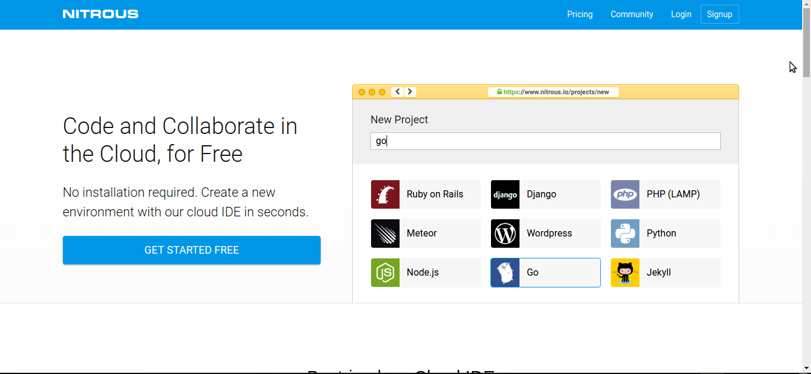
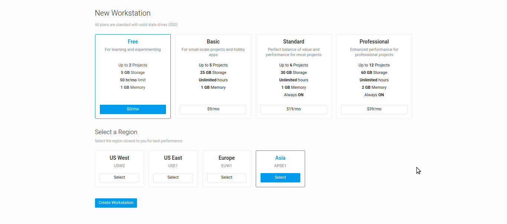
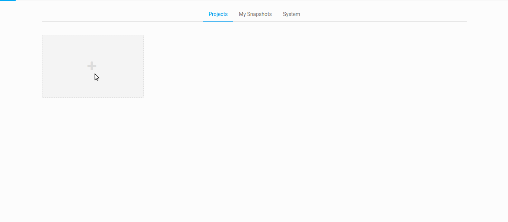
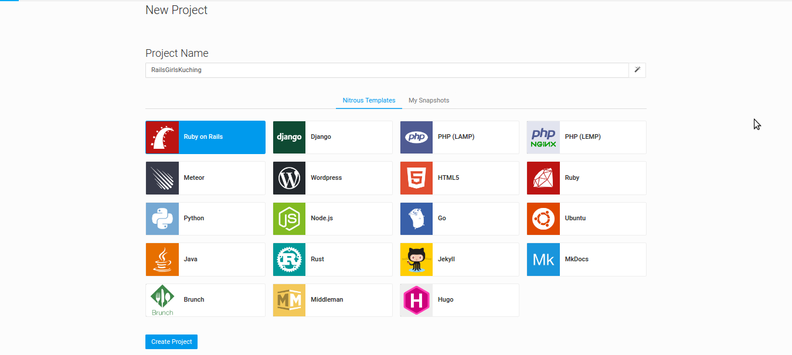
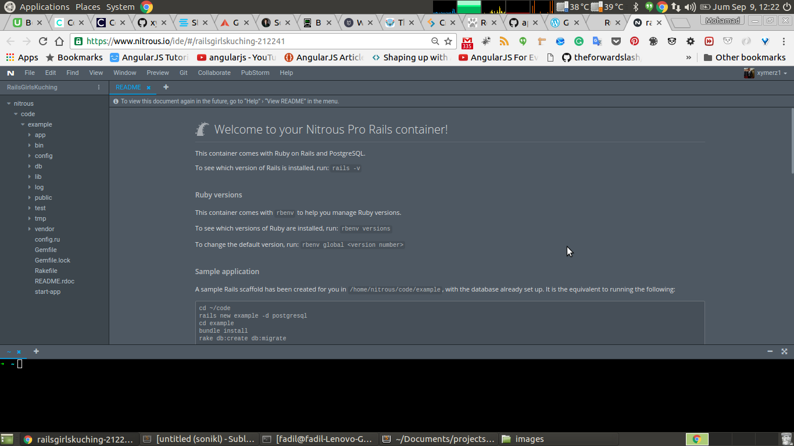

Setup Ruby On Rails on Windows
Overview
This will take about 30 minutes (Sometimes forever).
Here is a little fact, installing rails on windows is quite hard yaw, anyway, the tutorial is below there somewhere for you. However, once upon a time, when I started developing rails app, I was using windows, and god sent cloud9 and nitrous.io to save me, and I would recommend you to use nitrous.io (cause it free, daaa). If you are interested to install everything just read through, but if you want to use the cloud IDE, go here anyway...
- We’ll use a program called “Ruby Installer” to install the Ruby programming language.
- Then we’ll use Rubygems, a tool that’s included with our Ruby installation, to automatically download and install the Rails library
- We’ll install a Ruby “Development Kit” that Rails needs to work correctly.
- Lastly, since Rails includes several JavaScript-based features, we’re going to need a JavaScript runtime. So we’ll install Node.js.
Installing Ruby
First, we need an installation of the Ruby programming language.
- Download and run Ruby Installer from rubyinstaller.org.
- Allow the download to finish, then go to your Downloads folder, and open the “rubyinstaller” program. An installation wizard will open. Check “Add Ruby executables to your PATH”, then click Install. Wait while the installer runs, and click Finish when done.
- To access Ruby, go to the Windows menu, click All Programs, scroll down to Ruby, and click “Start Command Prompt with Ruby”. A command prompt terminal will open. If you type ruby -v and press Enter, you should see the Ruby version number that you installed.
At this point, we could attempt to install Rails. But some of the libraries Rails depends on need some “build tools” in order to be compiled, and Windows lacks those tools by default. So to fix that you need the ruby development kit.
- Download the Ruby Development Kit. (This download also originates from rubyinstaller.org, and is also hosted on bintray.com.)
- When it’s done, go to your downloads folder and double-click the DevKit executable.
- We need to specify a folder where we’re going to permanently install the DevKit. I recommend installing it in the root of your hard drive, at “C:\RubyDevKit“. (Don’t use spaces in the directory name.)
Now make the ruby dev kit available to Ruby
- Back in your command prompt, change to the the DevKit directory. (“Directory” is another name for a folder.) Type “cd C:\RubyDevKit“, or whatever other directory name you installed it in. Back in your command prompt, change to the the DevKit directory. (“Directory” is another name for a folder.) Type “cd C:\RubyDevKit“, or whatever other directory name you installed it in.
- Next we need to run a Ruby script to initialize the DevKit setup. Type “ruby dk.rb init“.
- Now we’ll tell that same script to add the DevKit to our Ruby installation. Type “ruby dk.rb install“.
Now your ruby and its dev kit has meet each other, yayy!!
Installing Rails
Time to install rails yaw. Rails is a 'gem' for ruby, so install the gem into your computer using the gem tool. In your command prompt, type the following
gem install rails --version 5.0.0Once you press Enter, the “gem” program will download and install that version of the Rails gem, along with all the other gems Rails depends on.
Installing NodeJS
Stay strong windows dev, there is one last thing you need to install. As some(ok... mostly) libraries that Rails depends on require a JavaScript runtime. so we need to install nodeJS
- Download the Node.js installer.
- Install it.When the installation is complete, you’ll need to restart your computer so Rails can access Node.js.
Finally, Once your computer restarts, don’t forget to go to the Windows menu, click “All Programs”, scroll down to Ruby, and click “Start Command Prompt with Ruby”.
Using Cloud IDE's
Nitrous.io
Visit the nitrous.io page.
Click on Sign Up button
Fill all the required fields.
It will ask you to choose the workstation that you want, just choose the free one, select Asia region and press the create workstation button
Then nitrous.io will create your workstation, just let it load, pray to god that the internet is fast so it doesn't take long time.
Once the workstation is created, you will be taken to the projects dashboard page, if this is your first time, your dashboard will be empty. So now press on the plus(+) icon on the dashboard.
After pressing the plus(+) button, create a new project screen will be awarded to you, Fill in the name of the project, and the select Ruby on Rails, and then press the create project button.
Then it will tell you that it is building your project workstation and etc stuff, just smile and look at your screen. Once the station is ready, you will be notified. So click on Open IDE button to enter the world of writing the code :)
Once everything is loaded, you will see a readme on the IDE, just read it as the readme is about starting up a new rails project.
- The bar on your left is your file hierarchy. You will learn all about the folders and files as you go with the flow.
- The middle part is where you will write all the code. The small bar above the large space is where all the file name will be shown.
- Lastly, the bottom part, the dark side is the terminal, in ruby on rails development, terminal plays a very important role. This is where you generate all sorts of stuff for your project. Chill, you will learn it in a while.
So yeah, you have successfully setup your nitrous.io, way easier than installing all the other stuff. Goodluck and happy coding.